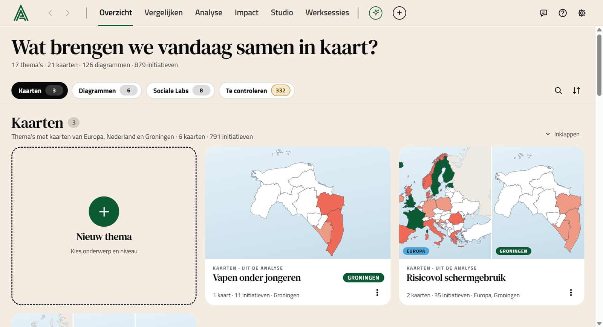
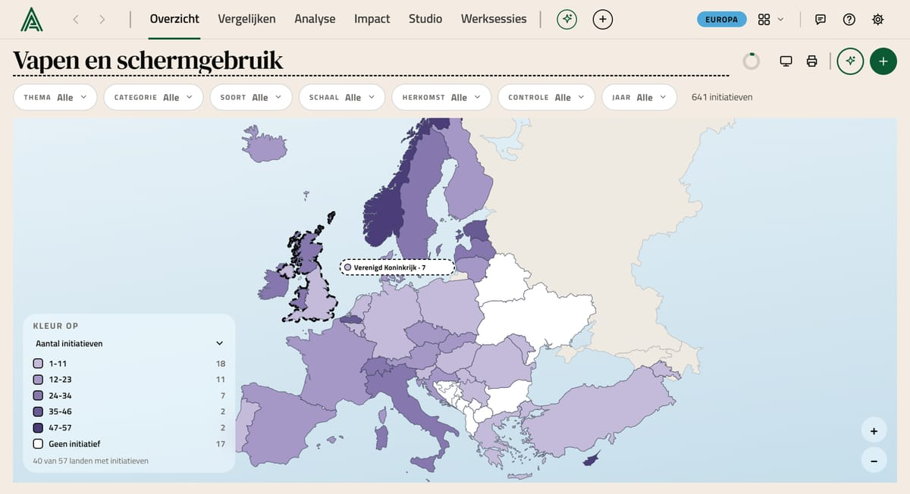
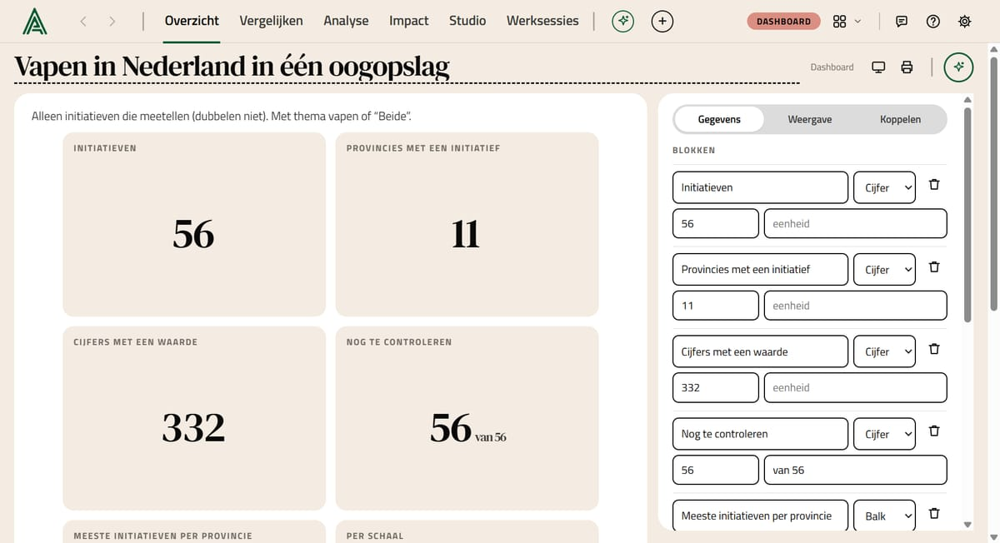
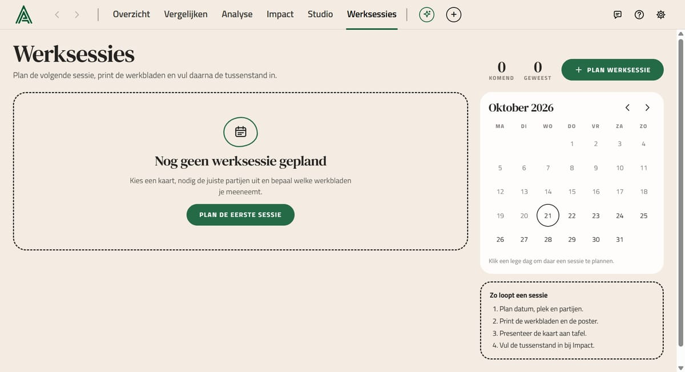

Samen in kaart brengen wat werkt.
T Toeltje laat zien wat er in Europa, Nederland en Oost-Groningen gebeurt tegen vapen en risicovol schermgebruik. Je bekijkt kaarten en diagrammen, plant werksessies en controleert samen de data. De desktop-app werkt ook zonder internet.

Eén plek voor kaarten, cijfers en wat mensen vertellen
T Toeltje brengt het onderzoek van Alexander Impact samen. Je ziet in één oogopslag waar iets gebeurt, wat werkt en wat nog getoetst moet worden. Zo kun je er samen mee aan de slag.
Kaarten
Initiatieven en cijfers op kaarten van Europa, Nederland en Groningen. Klik op een gebied voor het verhaal erachter.
Diagrammen
Ruim 120 kant-en-klare diagrammen en dashboards uit de dataset, per onderwerp.
Werksessies
Plan een sessie en print werkbladen die zichzelf uit de data vullen. Na afloop zet je de antwoorden terug.
Controleren
Elk punt laat zien of het al gecontroleerd is. Bevestig of wijs af, en exporteer het resultaat.



Zo zet je T Toeltje op je Windows-computer
Dat duurt ongeveer twee minuten. Je hebt Windows 10 of 11 (64-bit) nodig en ongeveer 400 MB vrije ruimte.
- Download het installatieprogrammaKlik bovenaan op Download voor Windows. Je komt op een pagina van OneDrive met
T-Toeltje-Setup.exe. Klik daar op Downloaden. Zegt de pagina dat het bestand te groot is om op virussen te scannen, of zegt je browser dat het niet vaak wordt gedownload? Kies dan Toch downloaden of Behouden. - Open het bestandDubbelklik op het bestand in je map Downloads.
- Krijg je een blauw venster "Windows heeft uw pc beveiligd"?Klik op Meer informatie en daarna op Toch uitvoeren. Hieronder lees je waarom.
- Kies waar de app komtDe voorgestelde map is prima. Klik op Installeren.
- StartenOpen T Toeltje via het pictogram op je bureaublad of via het menu Start.
Waarom die waarschuwing?
De app is (nog) niet digitaal ondertekend. Daarom kent Windows de uitgever niet en waarschuwt het eerst. De app is gemaakt door Alexander Impact en installeert alleen T Toeltje.
Liever niet installeren?
Download de losse versie. Die start meteen, ook vanaf een USB-stick. Handig op een computer van school of de gemeente.
Op een Mac?
De Mac-versie komt binnenkort. Gebruik tot dan de webversie in Safari of Chrome.
Je eerste kwartier met T Toeltje
Begin groot en zoom in: eerst zie je wat er is, daarna kies je, en pas dan ga je de details in.
Kies op Overzicht
Overzicht heeft drie blokken: Kaarten, Diagrammen en Sociale Labs. Met de balk bovenaan spring je ernaartoe.
OverzichtOpen een kaart
Klik op een land of gemeente. Rechts verschijnen de initiatieven, de stand en de cijfers van dat gebied.
KaartFilter wat je zoekt
Kies thema, schaal of jaar in de filterbalk. De kaart, de aantallen en de lijsten volgen meteen.
FiltersVergelijk en analyseer
Zet twee kaarten naast elkaar, of stel bij Analyse een vraag aan de data, zoals "Wat kan Oost-Groningen leren?".
AnalysePlan een werksessie
Bij Werksessies plan je een sessie, print je werkbladen uit de data en verwerk je na afloop de antwoorden.
WerksessiesDeel met deelnemers
Deel een kaart met een link of QR-code. Deelnemers openen die op hun telefoon in de webversie en vullen mee in.
DelenVeelgestelde vragen
Is T Toeltje gratis?
Ja. Je kunt de app vrij downloaden en gebruiken.
Waar staan mijn gegevens?
Op je eigen computer. Wil je samenwerken, dan koppel je in Instellingen een gedeelde werkruimte; je wijzigingen gaan dan via internet naar de anderen.
Werkt het zonder internet?
Ja. Kaarten, diagrammen, filters en werkbladen werken zonder internet. Alleen samenwerken in een gedeelde werkruimte heeft internet nodig.
Ik gebruikte de webversie. Neem ik mijn werk mee?
Ja. Kies in de webversie Instellingen → Exporteren. Kies in de app Instellingen → Importeren en open dat bestand.
Hoe krijg ik een nieuwe versie?
Download het installatieprogramma opnieuw van deze pagina en installeer het over de oude versie heen. Je eigen werk blijft bewaard.
Wat is het verschil tussen de app en de webversie?
Ze tonen hetzelfde. De app heeft een eigen venster, slaat bestanden op met een gewoon "Opslaan als"-venster en werkt helemaal zonder internet.
Werkt het op mijn telefoon?
De app is voor Windows (en straks de Mac). Deelnemers gebruiken op hun telefoon de webversie, via de link of QR-code die je deelt.
Hoe verwijder ik de app?
Via Windows-instellingen → Apps → T Toeltje → Verwijderen. De losse versie verwijder je door het bestand weg te gooien.